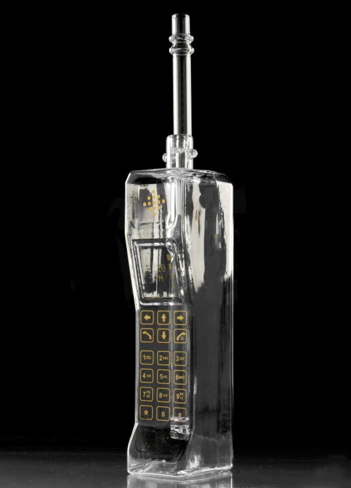

Week 1
The Art of Interactive Design: A Euphonious and Illuminating Guide to Building Successful Software
Chris gives his definition of interactivity, that is interactivity involves the an alternately process of listening, thinking and speaking of two actors. It’s very interesting how he deny the ‘activities’ (such as reading, dancing, watching movies and etc.) that people tend to mention as interactivity to be interactivity. Also, as an interaction (not interactivity) designer, how he differentiate Human-Factor Design, UI design and Interactivity Design really gives me an idea but I feel I still need to read more on this to learn his idea more solidly.
After reading the first chapter made me tend to rethink about the immersive shows: Sleep No More and Then She Fell.
Immersive Show - Sleep No More
Whereas people mention them as the ineractive shows. Whether they are truly interactive or they are just an audience-participative show. My experience at Sleep No More is definitely a participation, never a interaction. Where you get to step into the performing area (since the entire building is their stage) and have little touches with the performers. Some lucky audience might be selected for 1 on 1 performances, but rather than “two actors alternatively listen, think and speak”, it’s more likely the performer do the speaking (only to you, with set lines), and the audience react. But my experience in Then She Fell could be in the degree of interactivity, a low to medium interactivity happened. The scale of the audience is way smaller than the one mentioned previously, that might also be what he mentioned in the first chapter “as audience size shrinks, the statistical factors become less adamant.” For every show there will only be 15 audience, with the similar (or maybe more) amount of performer. Most of the scenes I experienced in this show are 1 on 1 or two audiences with four of the performers. The most memorable part in the entire show, also, the part I considered as a medium interaction happening, is when I’m having a 1 on 1 scene with the heroine and we had a conversation about relationship. Her opening question might be a set line, but whatever comes after that involved both of our listening, thinking and speaking. Yet, I call it a low-to-medium interactivity is because we were strangers and it is hard to give good feedback for such personal topics, so it was not an useless (cliche) conversation (but it was still fun as it appeared in the show).
In the next chapter he mentioned the relationship of computer and interactivity, which he suggested that the main "selling point" of a computer is its interactivity, by giving the example of ViSiCalc--the very first spreadsheet software on personal computers that allows the user to see the result/output directly on screen. This high efficiency indicates a sucessful, productive interactivity that a computer can provide. Thus, interactivity surely is the competitive advantage for computers.
A Brief Rant on the Future of Interaction Design
Victor talked about how our activity had been limited down to Pictures Under Glass. He start by defining a good tool is designed to fit both sides (capability vs. need). Talking about human capability, the thing that we use to interact with future technologies will be our hands. Our hands receive feedbacks from almost everything in this world—we notice when we grabbed two pages at once when we are reading and trying to slip apart by rubbing them; we feel the change in weight of a glass of water when it’s getting lesser and lesser; we feel the different texture of tissue papers and select each for different usages. However, our technology devices nowadays, which we spend most of our tactile experience with, are all so-called the Pictures Under Glass. Victor deny the saying of touchscreen devices to be the future of interaction, instead, sort of a backward in interaction (I felt it actually sounded too esthetically when he mentioned black and white in photography. I like film and black and white <3 ).
Now, almost every services had been shrinken down to the size of the “glass brick” we carry in hand. The “User-Friendly” we mentioned nowadays are also only up to the extend of how hands handle this glass, but not about our hands. After reading this, I really feel even though these digital products provide us conveniency to almost every service just by clicking on this glass, but it limits the potential interaction that our hand can have to things in the world. Also, this concept of smart device generation limits our capability as a designer. We thought that accessibility lives in that tiny glass brick, and ignored the subject that we are doing this for—us.

Get your glass brick today!